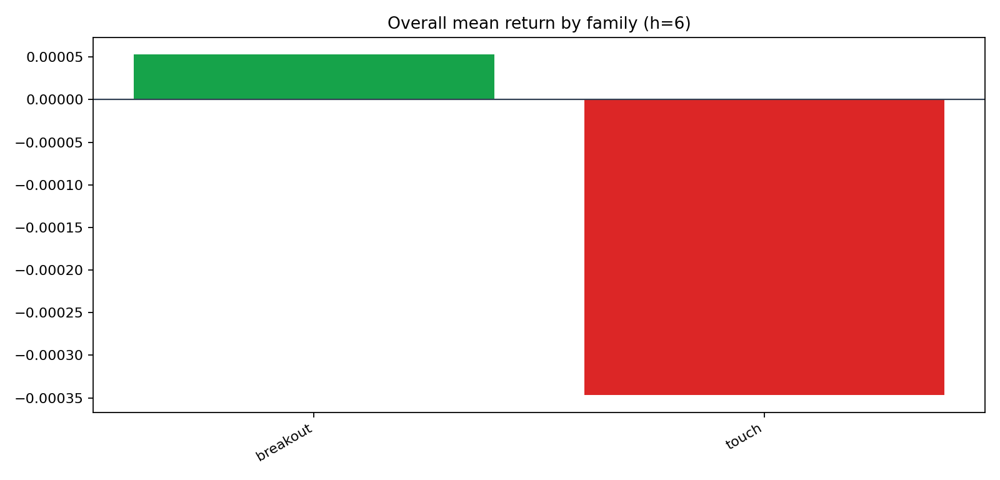
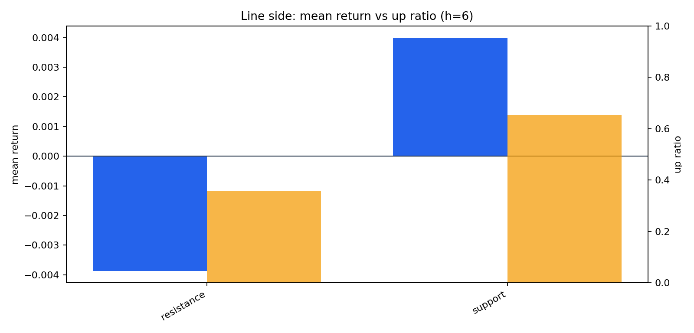
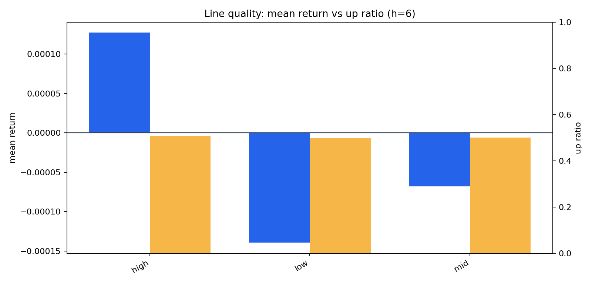
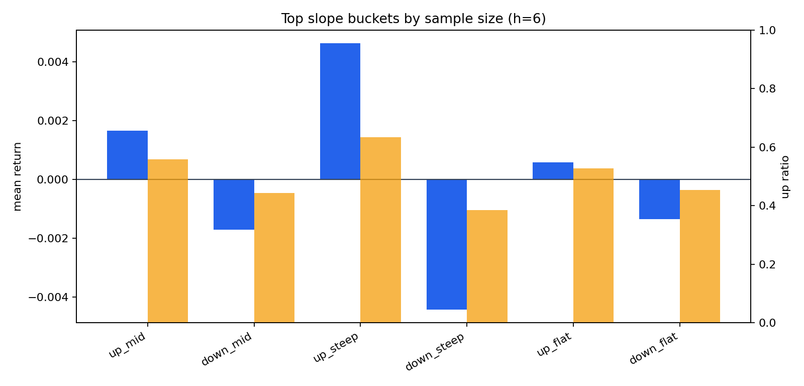
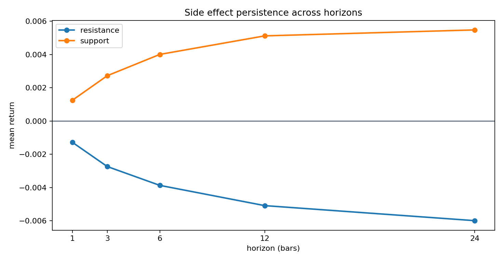
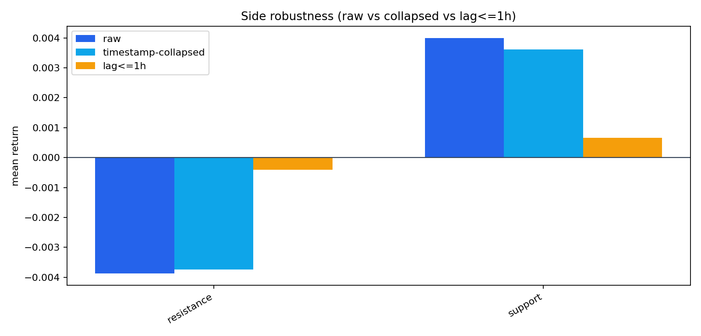
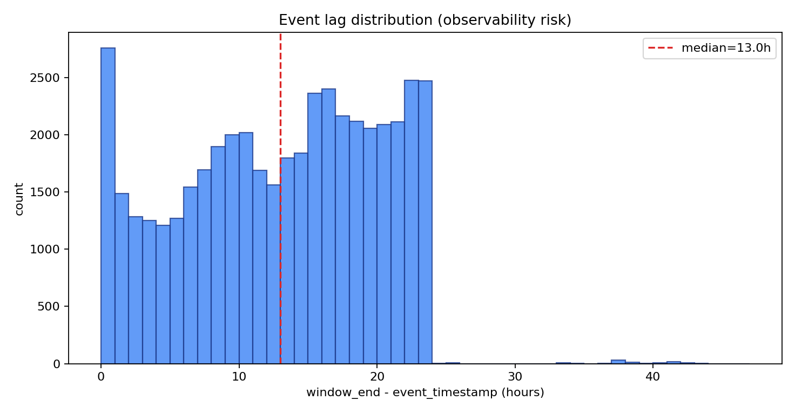
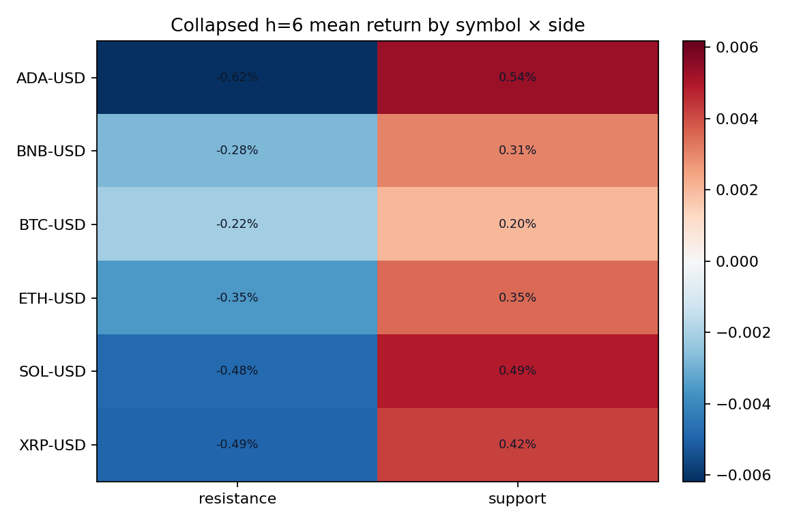
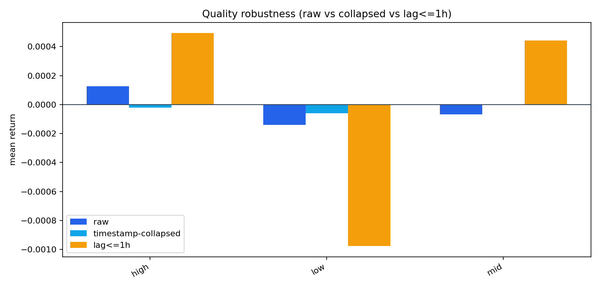

这页升级为“数据化 Q&A + 可信度分层”版本：不仅回答现象，还明确回答这些结论到底有多稳、哪里可能被样本结构误导。
| topic | descriptive_reliability | trading_reliability | evidence |
|---|---|---|---|
| line_side（support vs resistance） | 高 | 中低 | h6 raw gap=78.74bp，collapsed gap=73.52bp（保留 93.4%），lag<=1h gap=10.66bp（保留 13.5%）。 |
| slope_direction（mid/steep） | 高 | 中低 | |mean| raw=31.01bp，collapsed=30.38bp，lag<=1h=5.39bp；lag<=1h 方向强度仅保留约 17.4%。 |
| line_quality（high/mid/low） | 低 | 低 | h6 raw bucket spread=2.67bp，collapsed spread=0.61bp，lag<=1h spread=14.70bp。 |
| method risk（event observability） | 中 | 低 | event lag median=13.0h，p95=23.0h；lag==0 仅 6.0%，lag<=1h 仅 9.3%。 |
重要方法注记：事件时间与窗口终点存在系统性 lag（median=13.0h，p95=23.0h，lag==0 仅 6.0%）。 因此当前更适合解释“结构现象”，不适合直接宣称“可实时交易 alpha”。









| symbol | rows | start | end |
|---|---|---|---|
| BTC-USD | 8710 | 2025-03-14 00:00 | 2026-03-13 04:00 |
| ETH-USD | 8708 | 2025-03-14 00:00 | 2026-03-13 05:00 |
| SOL-USD | 8711 | 2025-03-14 00:00 | 2026-03-13 06:00 |
| BNB-USD | 8712 | 2025-03-14 00:00 | 2026-03-13 06:00 |
| XRP-USD | 8713 | 2025-03-14 00:00 | 2026-03-13 07:00 |
| ADA-USD | 8710 | 2025-03-14 00:00 | 2026-03-13 07:00 |
| horizon | event_family | events | mean_ret | median_ret | up_ratio | confidence_tier | direction_label |
|---|---|---|---|---|---|---|---|
| 1 | breakout | 35845 | 0.000009 | 0.000041 | 0.505008 | high | mixed |
| 1 | touch | 9851 | -0.000268 | -0.000091 | 0.489798 | high | mixed |
| 3 | breakout | 35845 | 0.000020 | 0.000190 | 0.509834 | high | mixed |
| 3 | touch | 9851 | -0.000432 | -0.000058 | 0.497107 | high | mixed |
| 6 | breakout | 35845 | 0.000053 | 0.000120 | 0.505287 | high | mixed |
| 6 | touch | 9851 | -0.000347 | -0.000234 | 0.490712 | high | mixed |
| 12 | breakout | 35845 | -0.000130 | 0.000032 | 0.500600 | high | mixed |
| 12 | touch | 9851 | -0.000052 | 0.000092 | 0.502081 | high | mixed |
| 24 | breakout | 35845 | -0.000362 | -0.000052 | 0.497950 | high | mixed |
| 24 | touch | 9851 | -0.000546 | -0.000547 | 0.487869 | high | mixed |
| line_side | events | mean_ret | median_ret | up_ratio | confidence_tier | direction_label |
|---|---|---|---|---|---|---|
| resistance | 23408 | -0.003874 | -0.002857 | 0.357741 | high | more_likely_down |
| support | 22288 | 0.004000 | 0.003436 | 0.653805 | high | more_likely_up |
| slope_bucket | events | mean_ret | median_ret | up_ratio | confidence_tier | direction_label |
|---|---|---|---|---|---|---|
| up_mid | 10215 | 0.001657 | 0.001269 | 0.558492 | high | more_likely_up |
| down_mid | 10047 | -0.001704 | -0.001139 | 0.443117 | high | more_likely_down |
| up_steep | 6868 | 0.004626 | 0.003329 | 0.634828 | high | more_likely_up |
| down_steep | 6449 | -0.004419 | -0.003110 | 0.384866 | high | more_likely_down |
| up_flat | 6086 | 0.000584 | 0.000734 | 0.527276 | high | mixed |
| down_flat | 6031 | -0.001351 | -0.000876 | 0.453988 | high | mixed |
| line_quality_bucket | events | mean_ret | median_ret | up_ratio | confidence_tier | direction_label |
|---|---|---|---|---|---|---|
| high | 11872 | 0.000127 | 0.000154 | 0.506654 | high | mixed |
| low | 10154 | -0.000140 | -0.000064 | 0.499212 | high | mixed |
| mid | 23670 | -0.000068 | 0.000025 | 0.501141 | high | mixed |
| line_side | raw_events | raw_mean_ret | raw_up_ratio | collapsed_events | collapsed_mean_ret | collapsed_up_ratio | lag1_events | lag1_mean_ret | lag1_up_ratio | collapse_abs_retention | lag1_abs_retention | lag1_sign_match |
|---|---|---|---|---|---|---|---|---|---|---|---|---|
| resistance | 23408 | -0.003874 | 0.357741 | 10389 | -0.003743 | 0.384349 | 2245 | -0.000402 | 0.484187 | 0.966197 | 0.103665 | True |
| support | 22288 | 0.004000 | 0.653805 | 10145 | 0.003609 | 0.621883 | 2003 | 0.000664 | 0.554169 | 0.902158 | 0.166063 | True |
| line_quality_bucket | raw_events | raw_mean_ret | raw_up_ratio | collapsed_events | collapsed_mean_ret | collapsed_up_ratio | lag1_events | lag1_mean_ret | lag1_up_ratio | collapse_abs_retention | lag1_abs_retention | lag1_sign_match |
|---|---|---|---|---|---|---|---|---|---|---|---|---|
| high | 11872 | 0.000127 | 0.506654 | 8109 | -0.000020 | 0.500678 | 983 | 0.000493 | 0.528993 | 0.159893 | 3.877655 | True |
| low | 10154 | -0.000140 | 0.499212 | 7191 | -0.000059 | 0.501043 | 1055 | -0.000977 | 0.482464 | 0.423370 | 6.999951 | True |
| mid | 23670 | -0.000068 | 0.501141 | 12774 | 0.000002 | 0.504462 | 2210 | 0.000441 | 0.528507 | 0.023167 | 6.487272 | False |